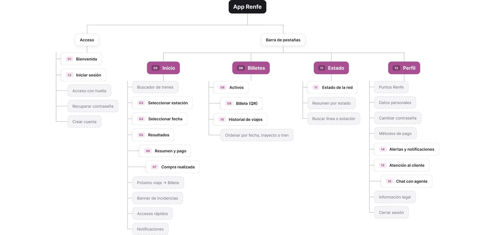
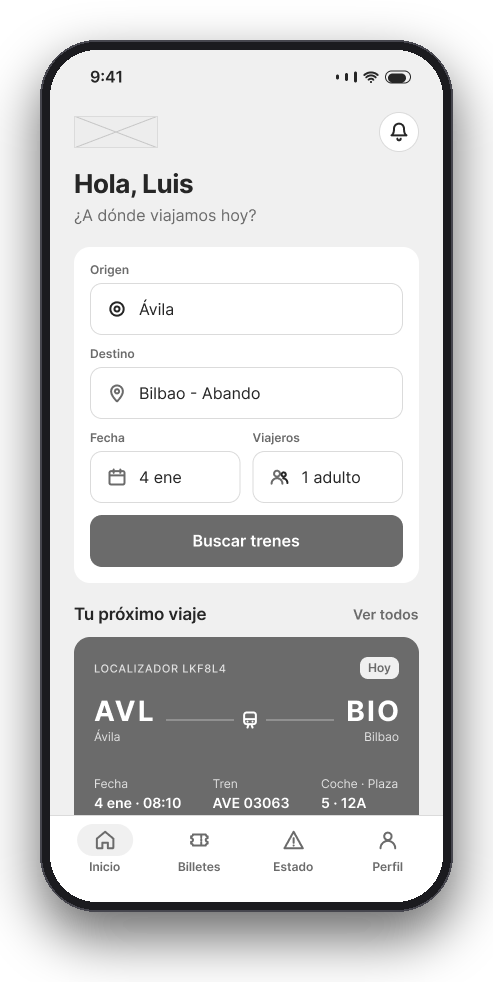
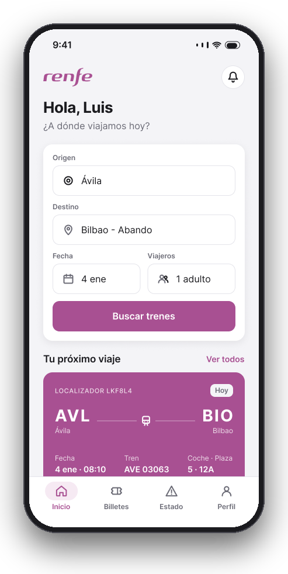
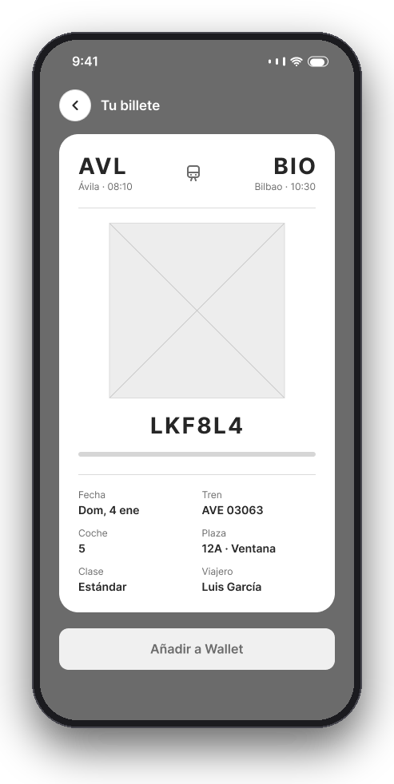
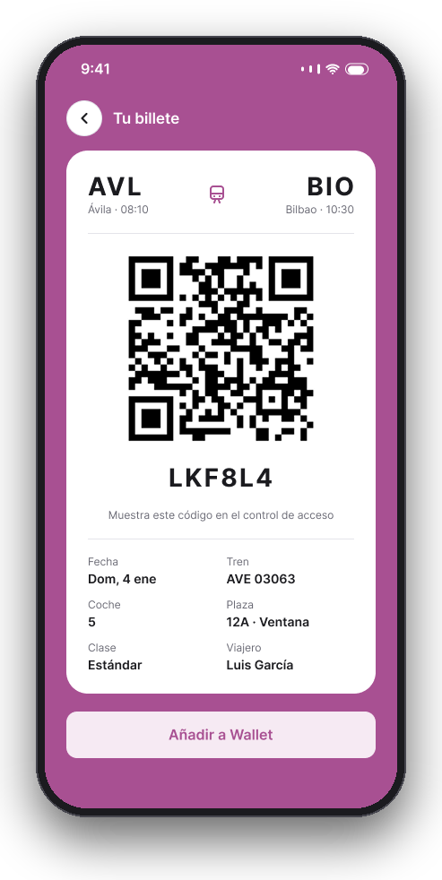

Project 05 · UX/UI design
Improving the user experience of rail travel through user-centred research, wireframing and interactive prototyping
Renfe's current app has usability and inclusivity limitations. Users hit friction in basic processes such as buying tickets, checking timetables and handling disruptions. Navigation is not intuitive and the information architecture is not optimised for what travellers actually need.
Create a user experience that simplifies existing processes, improves accessibility for every audience and optimises the efficiency of the rail service. The guiding question was: which improvements encourage ease of use, inclusivity, sustainability and service efficiency?
A broad and diverse audience: frequent travellers who prioritise speed and efficiency, and occasional users who want simplicity and clarity. Particular attention to inclusivity for people with different levels of digital literacy and different abilities.
The process was structured around three methods: digital immersion in comparable apps from countries with better rail standards (HSL in Finland, NS in the Netherlands, SBB Mobile in Switzerland), identifying best practice in QR codes and multimodal integration; empirical research as a user of the current app, documenting friction and opportunities; and qualitative interviews with three distinct profiles, which informed the User Personas and User Journeys, synthesised through an affinity diagram.
The architecture was simplified into four categories: Trip planner (combining purchase, timetables and disruptions), My tickets (QR, PDF, history and favourites), Profile (personal data and Renfe points), and Settings and help (custom alerts, chat, FAQ and legal documentation). Card sorting with users confirmed that fewer categories with clear functions significantly improves navigation.
Simplifying without losing functionality took several rounds of wireframing. Intuitive naming proved difficult, with terms such as "Trip planner" requiring semantic adjustments. The contextual alert system prioritises relevant disruptions with customisable options. Digital accessibility was a priority throughout, accounting for touch target sizes, contrast and legibility in critical flows.
Before designing any screen, the structure of the app was defined: four fixed tabs — Home, Tickets, Status and Profile — that keep every key task one or two taps away.
The sitemap groups 16 screens into no more than three levels of depth. On top of that structure, the flows of the main tasks — buying a ticket, travelling with it, checking disruptions, getting support — were mapped, along with a content inventory for each screen.
Then, low-fidelity wireframes set the hierarchy of each screen, and a design system with variables and components shapes the interactive mobile prototype.





A 16-screen sitemap with no more than three levels, organised into four fixed tabs: Home, Tickets, Status and Profile.
Flows for the four key tasks — buying a ticket, travelling with it, checking disruptions and getting support — with their decision points.
Low-fidelity wireframes to set the hierarchy, and an interactive mobile prototype: booking, tickets, network status and profile.
Color, radius and spacing variables, text styles and components with variants in Figma.
Next project
Castellón City Council Web & App Redesign